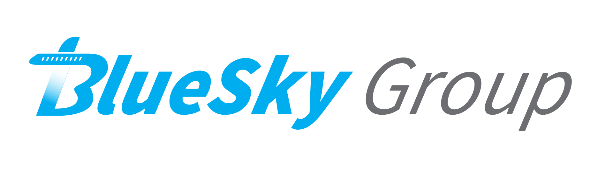

Brandon Samz
Major: Computer Science and Mathematics
Hometown: Mesa, AZ
Education
-
Northern Arizona University
- Relevant Coursework: Mobile Application Development, Advanced User Interfaces, Software Engineering
- Desert Ridge High School
Work Experience
No technical work experience.
Skills
- User Interface Prototyping and Design: Worked with various interfaces during the Advanced User Interfaces course, where I was able to practice prototyping, testing, and designing interfaces.
- Mobile Application Development: Created multiple mobile applications during the Mobile Application Development course, each of which implemented different features available while focusing on user experience and interface design.
- Strong Leadership and Organizational Skills: Currently work supervising 22 RAs working a front desk. This involves staying organized and keeping up to date with email communication and questions, as well as providing feedback and training on various processes.
Other interests
I'm always interested in learning new skills and discovering how different things work. Currently, I'm also working on mathematics research involving game theory, which has allowed me to keep my brain constantly active while also combining my love for math and programming. Overall, I find a need to keep myself constantly busy and involved, whether that be with work, school, or some sort of game.